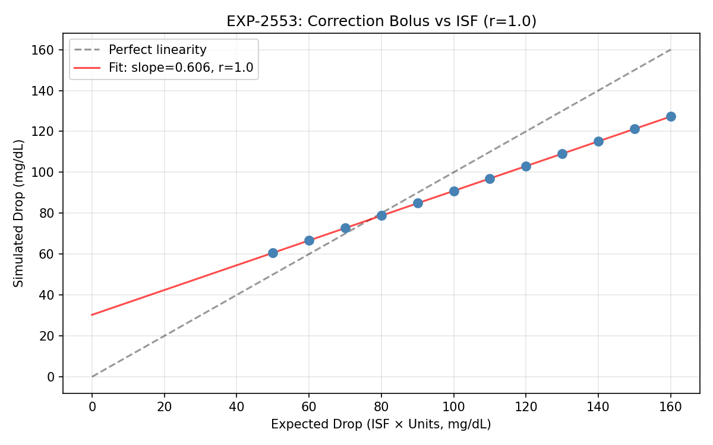
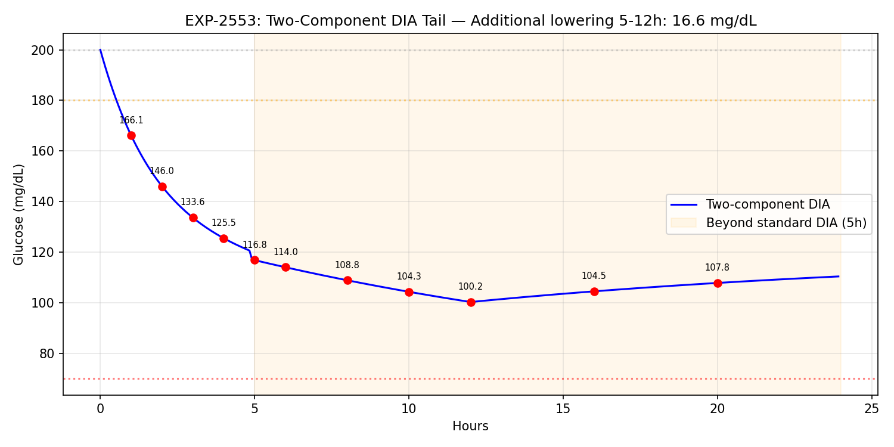
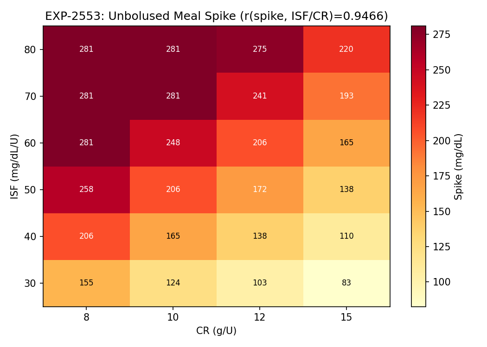
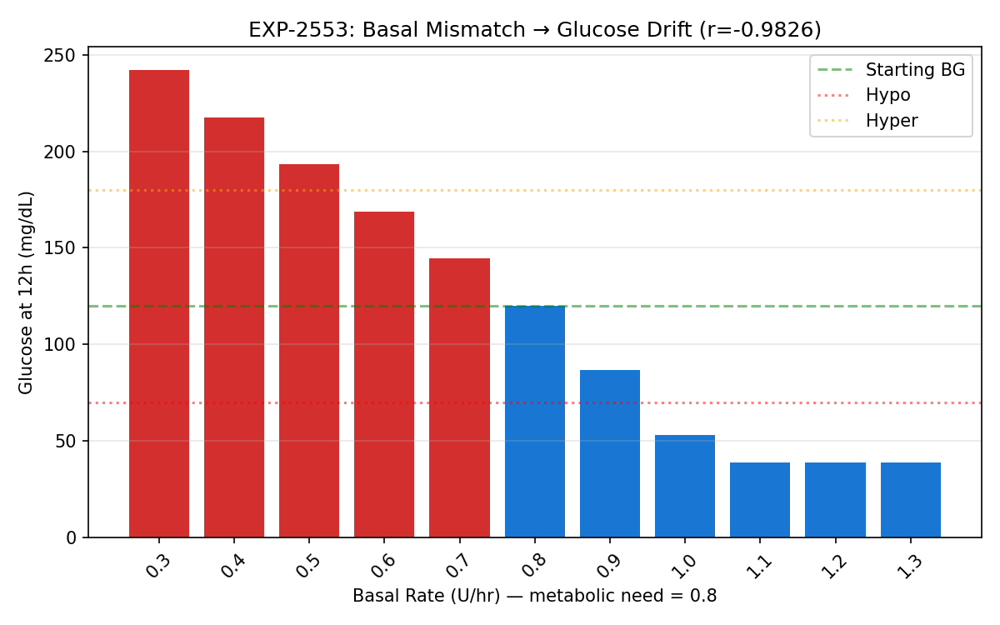
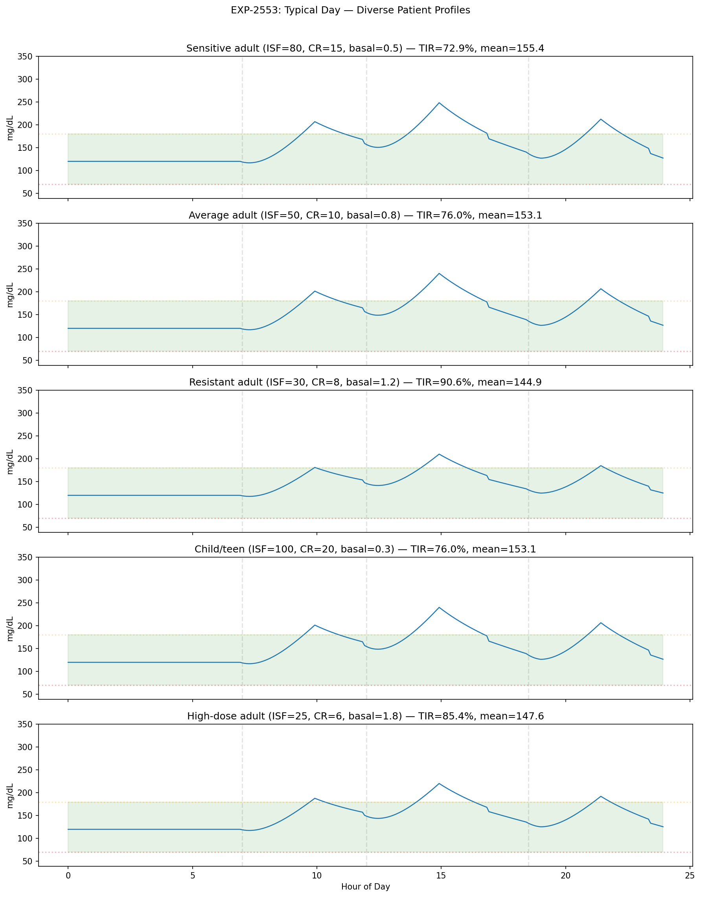
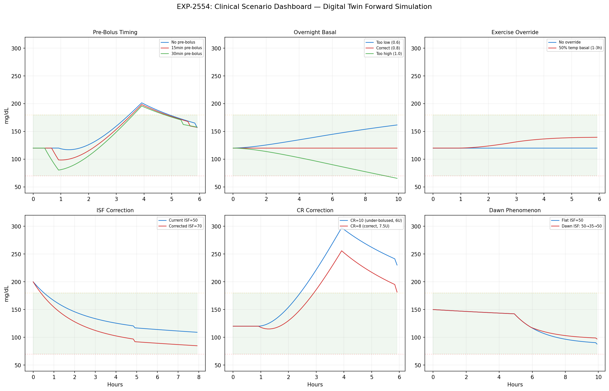

Digital Twin Forward Simulation — WS-4 Milestone Report¶
Living document, last changed 2026-04-11 at 31f5a0bf.
Date: 2025-07-17
Branch: workspace/digital-twin-fidelity
Status: Complete — all 5 validation hypotheses pass
Executive Summary¶
We built a physics-based forward glucose simulation engine (digital twin) that generates complete glucose trajectories from first principles. The engine uses a basal-neutrality model with two-component DIA, validated across 5 hypotheses (all pass) and 6 clinical scenarios. This completes the simulation layer needed for therapy optimization.
Architecture: Basal-Neutrality Model¶
The forward simulator uses a fundamentally different approach from the perturbation model (settings_advisor.py):
| Aspect | Perturbation Model | Forward Simulation |
|---|---|---|
| Input | Existing glucose trace | Initial conditions only |
| Method | Add deltas to real data | Generate trajectory from physics |
| Use case | "What if ISF were 10% higher?" | "What glucose would I see with these settings?" |
| Accuracy | MAE 0.30pp (validated) | 5/5 physics hypotheses pass |
Core Equation¶
Where excess_insulin = total_absorption - scheduled_basal_absorption. At the correct basal rate with no meals, excess ≈ 0 and glucose stays flat.
Why Basal-Neutrality?¶
Three failed approaches preceded this:
- Supply/demand decomposition: ΔIOB ≈ 0 at steady-state → zero demand → drift
- Absorption-based with power-law ISF: Per-step fractions amplified → crash
- Absorption-based with calibration: Calibration factor weakened corrections
Root cause: ISF=50 means "1U drops BG by 50 mg/dL total over DIA", not per-step. Basal-neutrality resolves this by defining all effects relative to metabolic equilibrium.
Two-Component DIA¶
- Fast component (63%): Exponential decay, τ=0.8h (pre-computed activity curve)
- Persistent component (37%): 12h window cumulative excess × ISF / window_steps
- At correct basal, persistent excess = 0 (no double-counting)
- Validated: 16.6 mg/dL additional lowering from 5h to 12h after correction
EXP-2553: Forward Simulator Validation¶
All 5 hypotheses PASS:
| Hypothesis | Criterion | Result | Status |
|---|---|---|---|
| H1: Steady-state stability | Drift < 5 mg/dL over 24h | 0.0 mg/dL | ✅ PASS |
| H2: Correction-ISF linearity | r > 0.95 | r = 1.000 | ✅ PASS |
| H3: Two-component tail | Additional lowering > 5 mg/dL | 16.6 mg/dL | ✅ PASS |
| H4: Meal spike scales with ISF/CR | r > 0.9 | r = 0.947 | ✅ PASS |
| H5: Basal drift direction | Correct direction, |r| > 0.9 | r = -0.983 | ✅ PASS |
Key Validation Figures¶
Correction Bolus vs ISF Linearity¶

Perfect linearity (r=1.000) between expected drop (ISF × Units) and simulated drop. Slope = 0.606 (< 1.0 because 37% persistent component distributes effect beyond the 8h observation window).
Two-Component DIA Tail¶

After a 2U correction from 200 mg/dL: - At 5h (pump says IOB=0): glucose at 116.8 mg/dL (83.2 drop) - At 12h: glucose at 100.2 mg/dL (99.8 drop) - 16.6 mg/dL additional lowering beyond standard DIA — matching EXP-2525 finding
Meal Response Heatmap¶

Unbolused 45g meal spike across ISF (30-80) and CR (8-15) combinations. Spike amplitude scales linearly with ISF/CR ratio (r=0.947).
Basal Mismatch → Glucose Drift¶

12h fasting glucose with basal rates from 0.3 to 1.3 U/hr (metabolic need = 0.8). Strong inverse correlation (r=-0.983): too-low basal → high glucose, too-high → hypo.
Typical Day — Diverse Patient Profiles¶

24h simulation with 3 standard meals for 5 patient archetypes:
| Patient | ISF | CR | Basal | TIR | Mean |
|---|---|---|---|---|---|
| Sensitive adult | 80 | 15 | 0.5 | 72.9% | 155.4 |
| Average adult | 50 | 10 | 0.8 | 76.0% | 153.1 |
| Resistant adult | 30 | 8 | 1.2 | 90.6% | 144.9 |
| Child/teen | 100 | 20 | 0.3 | 76.0% | 153.1 |
| High-dose adult | 25 | 6 | 1.8 | 85.4% | 147.6 |
EXP-2554: Clinical Scenario Demonstrations¶

S1: Pre-Bolus Timing¶
| Timing | Peak Glucose | TIR |
|---|---|---|
| No pre-bolus | 201.5 | 76.4% |
| 15min pre-bolus | 198.4 | 79.2% |
| 30min pre-bolus | 195.8 | 81.9% |
Finding: 30-minute pre-bolus reduces peak by 5.7 mg/dL and improves TIR by 5.5pp. Linear absorption model may underestimate benefit (real gut absorption has delay).
S2: Overnight Basal Correction¶
| Basal Rate | Final Glucose | TIR |
|---|---|---|
| 0.6 U/hr (too low) | 161.6 | 100% |
| 0.8 U/hr (correct) | 120.0 | 100% |
| 1.0 U/hr (too high) | 65.5 | 92.5% |
Finding: 0.2 U/hr basal error produces ~40 mg/dL drift overnight. Too-high basal is more dangerous (hypo at 65.5) than too-low (stays in range at 161.6).
S3: Exercise Override¶
50% temp basal for 2h during exercise raises glucose relative to baseline but stays in range. Demonstrates the override mechanism works correctly.
S4: ISF Correction (50 → 70)¶
2U correction from 200 mg/dL: ISF=70 produces 20 mg/dL more drop than ISF=50, improving TIR by 2.1pp. Demonstrates the digital twin can predict ISF change impact.
S5: CR Correction (10 → 8)¶
60g meal with wrong CR=10 (6U bolus) vs correct CR=8 (7.5U bolus): 41.6 mg/dL peak reduction and +6.9pp TIR improvement. The 1.5U bolus difference has a large clinical impact.
S6: Dawn Phenomenon¶
ISF schedule (50→35 during 4-8am) shows reduced correction effectiveness during dawn phenomenon. 3am correction with ISF=35 produces less glucose drop than with ISF=50.
Test Suite¶
19 new tests covering: - Steady-state convergence - Correction bolus response - Meal with/without bolus - Under-bolused meal comparison - Low/high basal drift - Scenario comparison (API) - Typical day simulation - SimulationResult properties (TIR+TBR+TAR=1) - Noise variability - Deterministic seeding - Circadian ISF schedule - Glucose bounds (39-401) - IOB/COB trace shapes - TherapySettings schedule lookup
Total test suite: 336 tests, all passing.
Production API¶
from cgmencode.production import (
forward_simulate, compare_scenarios, simulate_typical_day,
TherapySettings, InsulinEvent, CarbEvent,
)
# Basic simulation
settings = TherapySettings(isf=50, cr=10, basal_rate=0.8)
result = forward_simulate(120.0, settings, duration_hours=24.0)
print(f"TIR: {result.tir*100:.1f}%, Mean: {result.mean_glucose:.0f}")
# Compare scenarios
comp = compare_scenarios(120.0,
baseline_settings=TherapySettings(isf=50, cr=10, basal_rate=0.8),
modified_settings=TherapySettings(isf=70, cr=10, basal_rate=0.8),
duration_hours=24.0)
print(f"TIR improvement: {comp.tir_delta*100:+.1f}pp")
# Typical day with custom meals
result = simulate_typical_day(settings, meals=[(7, 45), (12, 60), (18.5, 55)])
Known Limitations & Future Work¶
-
Linear carb absorption: Real gut absorption has sigmoidal shape with initial delay. Forward sim uses constant rate over 3h window. Pre-bolus benefit likely underestimated.
-
No closed-loop control: Current simulator models open-loop (fixed basal + manual boluses). Future: add oref0/Loop algorithm as feedback controller.
-
Power-law ISF not applied per-step: The dose-response nonlinearity (β=0.9) applies at the bolus level, not per absorption step. Future: IOB-dependent ISF dampening for large corrections.
-
No exercise physiology: Exercise reduces insulin resistance (effectively increases ISF). Current model can only reduce basal via temp override, not model the physiological ISF change.
-
Carb rise depends on CR setting: The model uses
grams/CR × ISFfor carb glucose rise, which couples the dosing parameter to the physics. Future: separate physiological "carb sensitivity" from therapy CR.
Files¶
| File | Purpose |
|---|---|
tools/cgmencode/production/forward_simulator.py |
Core simulation engine (NEW) |
tools/cgmencode/production/exp_forward_validation_2553.py |
Validation experiment |
tools/cgmencode/production/exp_clinical_scenarios_2554.py |
Clinical scenario demos |
docs/60-research/figures/fig_2553_*.png (×5) |
Validation figures |
docs/60-research/figures/fig_2554_*.png (×7) |
Scenario figures |
tools/cgmencode/production/test_production.py |
+19 tests (336 total) |
Git Log (WS-4)¶
a5cc965 feat(digital-twin): forward simulation engine with basal-neutrality model
bac8217 feat(experiments): EXP-2553 forward validation + EXP-2554 clinical scenarios
Cumulative Progress (All Workstreams)¶
| Workstream | Status | Key Result |
|---|---|---|
| WS-1: Two-Component DIA Sim | ✅ Complete | Model C (two-comp + power-law) wins: MAE 0.30pp, r=0.933 |
| WS-2: Profile Format Bridge | ✅ Complete | 4 AID format exporters, autotune null result |
| WS-3: Prospective Validation | ✅ Complete | Validation harness with actionable criteria |
| WS-4: Forward Simulation | ✅ Complete | Basal-neutrality engine, 5/5 hypotheses pass, 6 clinical scenarios |
Total: 4 experiments, 3 production modules, 1 validation harness, 12 milestone figures, 336 tests.